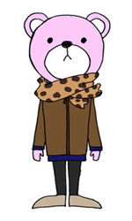
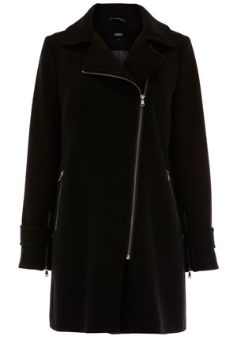
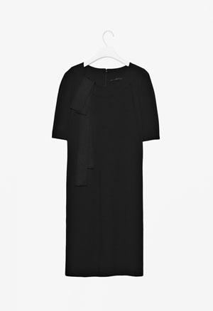
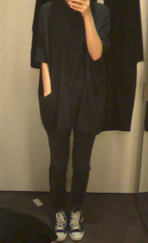

요즘 줄기차게 입고댕기는
Ted Baker 가죽자켓 + 호피무늬 스카프 :-D
전에 M군이랑 윈도우쇼핑하다가
옷취향에 대한 이야기가 나왔는데
M군 : 난 그냥 boring한 스타일이 좋아. 안튀고 무난하게
나 : 어!! 나도 그래!! 걍 normal한게 최고지
M군 : ......지금 가죽자켓에 호피무늬 스카프 두르고
normal이란 단어를 쓴거야? ㅡㅡ;;;
이랬었다능;;;;;;;;;☞☜ 왜;; 이게 어때서;;;;;
입고댕기기 시작한건 10월초 부터지만
그동안 너무 HP가 바닥을 쳐서 ㅡㅡ;;;
집에돌아오면 겔겔거리다가 잠드는게 전부OTL
+
일이 촘 바빴다 ㅡㅡ;;;
내가 이회사 들어와서 첨으로 7시반까지 일을했어!!!!
원래 분위기가 5시반퇴근에 6시~6시반까지만 일해도
어우~우리 일 너무 열심히하는거 같아 (ㅡㅡ;;;)이런분위기라;;
일한지 이제 1년6개월 촘 넘어가는데
이번주 라이센싱쇼 + 갑자기 와장창 몰아닥친 프로젝트로
정신이 하나도 없었따 @_@
목욜날 저녁7시반에 사무실 나오면서
헐~나 오늘 야근했네? 이회사 들어와서 첨으로 야근했어~
이렇게 생각하다가 또 한편으로는
7시반까지 일해놓고 야근이래~~~
야근이란 단어를 썼어~ㅋㅋㅋㅋㅋㅋ 이러고 혼자 켈켈거렸다^^;;;
환경의 무서움이란 허허헛;;
하지만 덕분에 라이센싱쇼 못갔다 ㅜㅜ
헝헝 느므 바빴어 ㅜㅜ
이번에 부스도 크게내고 굿즈도 많아서 꼭 구경가고 싶었는데 ㅜㅜ
써보지도 못한 내 이름표 흑흑흑
+
그리고 그 와중에 부업은 소중하다!!를 외치며
간단한 외주하나 ㅡㅡ;;;
아싸 페이받으면 겨울코트 사야지~했던게 2주전
페이는 받았으나 이거닷!! 싶은걸 아직도 못찾았다OTL
아직도 겨울코트 집착중;;
나 이러다 결국 복싱데이까지 갈거같기도;;;

Biker detail coat
첨에 요거 발견하고 엄훠~내취향+_+ 이었으나
하루에 평균 5명이상 길에서 이런 디자인 코트입은 사람을 볼수있다 ㅡㅡ;;
ZARA/ASOS/OASIS등등 엔간한 브랜드마다
깔별 종류별로 나와있음
.......................그러므로 안사 ㅡㅡ;;;
내눈에 이뻐보이는건 다른사람눈에도 이뻐보이겠지 ㅡㅜ
알고보니 지방시에서 저런스타일이 나왔다고
동생곰이 알려줬다;; 음;; 그런것이군;;;;;

그리고 요래 슬렁슬렁 가게구경다니믄서
깨알같이 딴걸 집어오고있다;;;;;
COS세일중이라 깜장원피스한벌 겟 :)

요 위에 입어본건 고민중^^
상의는 절대 목부분이 넓게 파인걸 입어야하는데
(폴로티/와이셔츠종류가 너무 안어울리는 인간 ㅡㅜ)
요건 주머니 큼직하니 있구 + 카라있어도 맹구처럼 안보여+_+
그나저나 NW3 랑 COS는 사이즈가 좀 크게나오는듯
다른브랜드S 입으면 여긴 XS이 맞는다
거참 사람에게 꿈과희망을 주네^^;;;;
근데 제목은 가죽자켓이라 써놓고
내용은 코트찾아댕기다 딴거사온 이야기로 마무리.........OTL
일주일 다시 힘차게 로동!!